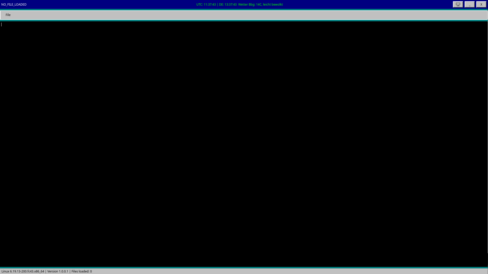
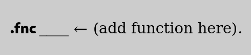
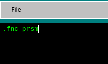
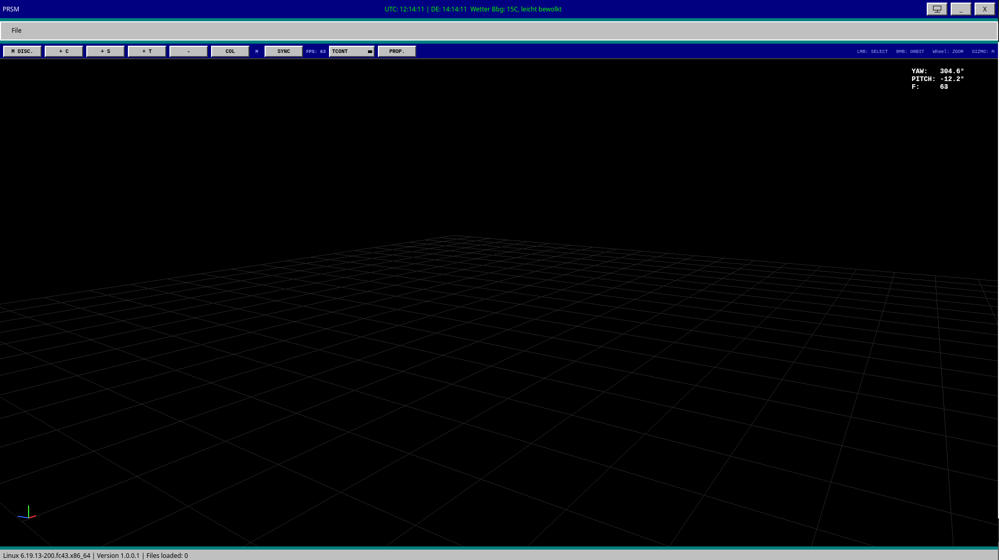

04/24/2026
- release of GerStruct V.1.0.0.1
GerStruct
During the installation of Gerstruct, it can quickly seem like it's just a simple text editor. But it's more than that.

In the GerStruct start screen, you can treat the interface just like a normal text editor (such as n++ or Windows Editor).
You can add text, delete it, save files and access them again.
If you want to use new or special features and functions of GerStruct, certain commands will be relevant for you.
the .fnc command
If you want to enjoy the various functions of GerStruct, you can't avoid one universal command: the function command.
(As soon as new updates and modes are added, you can find information about the new commands in the Documentation tab)
For now, let's use the standard functions of this program
the structure
In Gerstruct, the structure for the .fnc command is always the same.

Then just press ENTER and have fun with the functions.
example:

